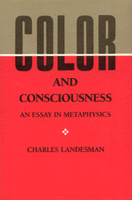

Defending a view called color skepticism—distinct from radical skepticisms—about the external world
Defending a view called color skepticism—distinct from radical skepticisms—about the external world


 Defending a view called color skepticism—distinct from radical skepticisms—about the external world
Defending a view called color skepticism—distinct from radical skepticisms—about the external world

|  |
Color and ConsciousnessAn Essay in MetaphysicsCharles Landesmancloth EAN: 978-0-87722-616-1 (ISBN: 0-87722-616-4) |
"Landesman�s discussion is lucid, competent, and in many spots original. This metaphysical topic is hot just now, and of recurring historical concern, and of genuine philosophical interest; those three features do not often coincide."
—William G. Lycan, University of North Carolina
Charles Landesman deals with the philosophical problems of perception and with the status of color properties and he comes to the surprising conclusion that nothing at all has any color, that colors do not exist. In making the case for his "color skepticism," Landesman discusses and rejects historically influential accounts of the nature of secondary qualities—such as those of Locke, Reid, Galileo, and Hobbes—as well as the more recent work of Kripke, Grice, and others.
Philosophers have debated whether colors are real qualities of bodies, merely dispositional properties, or mental entities caused by the impact of light upon the visual system. The author argues that none of these alternatives can be adequately defended and that they all assume that a correct theory of color must preserve, to some extent, our commonsense beliefs. Instead, Landesman defends a view called color skepticism, that nothing has any color, neither bodies nor appearances. Since this view is based upon an argument that includes certain empirical premises, he distinguishes it from the radical skepticisms about the external world identified with the thought of Descartes and Hume.
Color and Consciousness treats an area of philosophy that is currently of great interest to those concerned with the theory of knowledge, metaphysics, the philosophy of mind, and the psychological theory of perception.
Charles Landesman is Professor of Philosophy at Hunter College and at the Graduate School of the City University of New York.
© 2015 Temple University. All Rights Reserved. This page: http://www.temple.edu/tempress/titles/647_reg.html.